Galerie
Les équipements en images


✦ Artisanat & Équipement ✦
Forgez des armes redoutables, des armures résistantes et des outils uniques à partir des ressources récoltées sur les créatures d'Operation W.I.L.D.
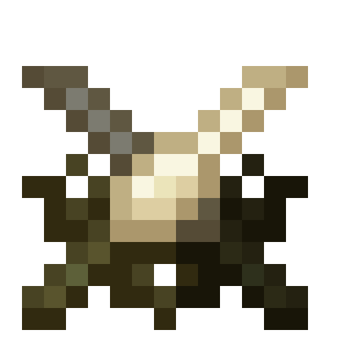
Dagues Reptiliennes ◆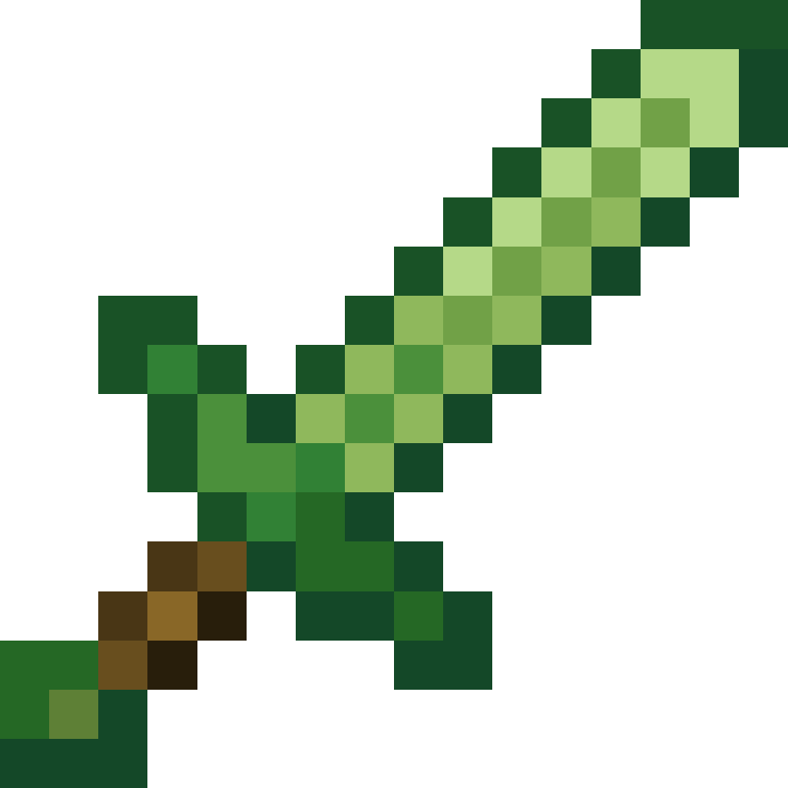
Épée en Jade ◆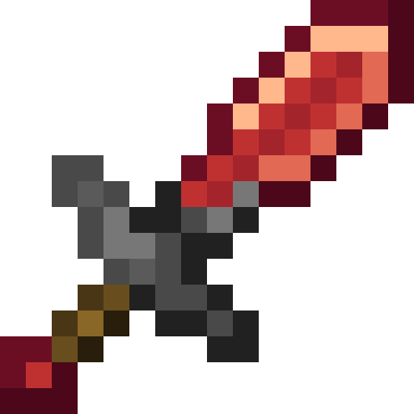
Épée en Rubis ◆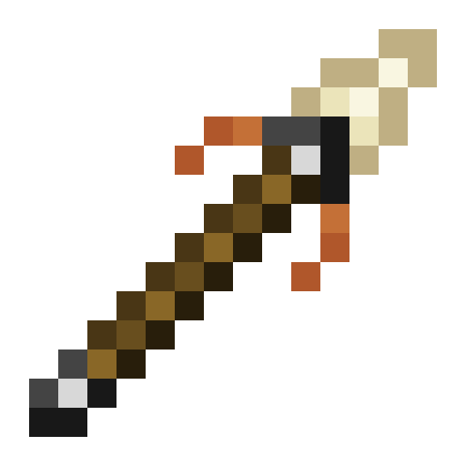
Lance Primitive ◆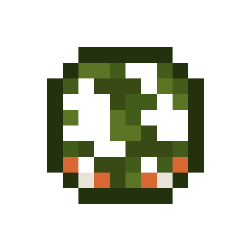
Casque de Camouflage ◆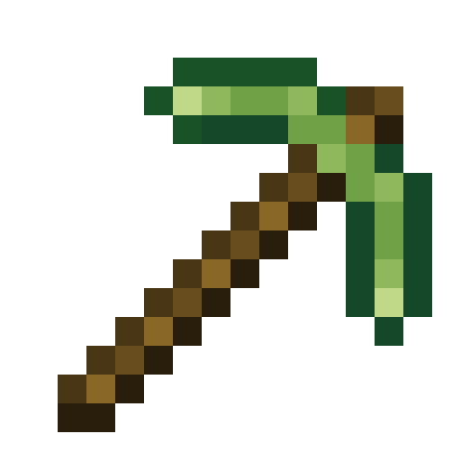
Pioche en Jade ◆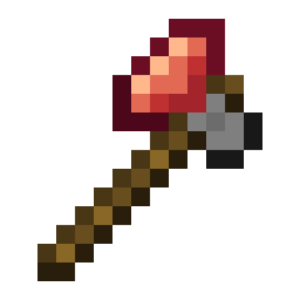
Hache en Rubis ◆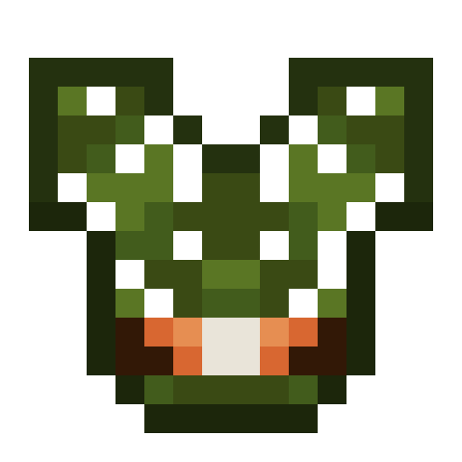
Plastron de Camouflage ◆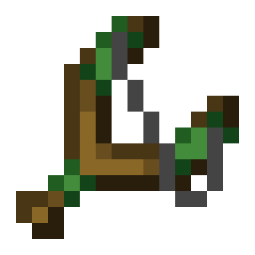
Lance-Pierre Primitif ◆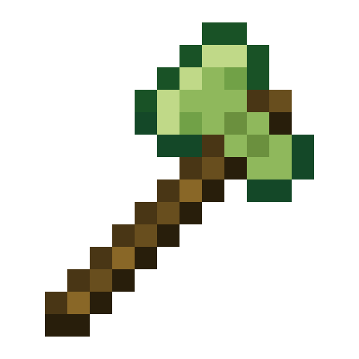
Hache en Jade ◆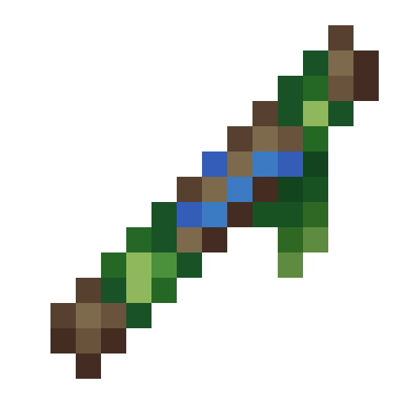
Sarbacane Primitive ◆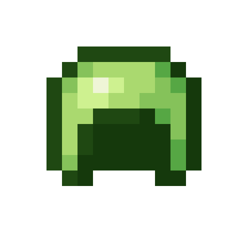
Casque en Jade ◆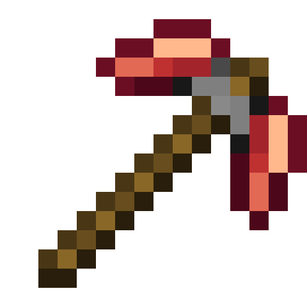
Pioche en Rubis ◆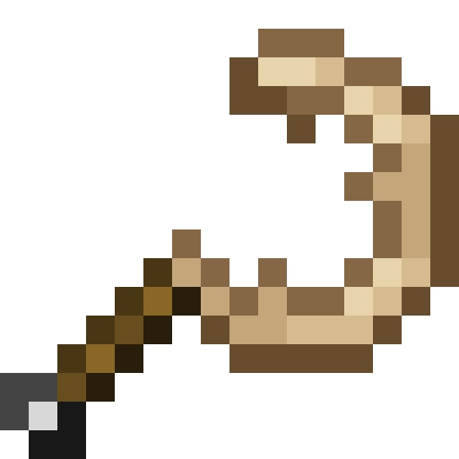
Faucille Primitive ◆ Dagues Reptiliennes ◆ Épée en Jade ◆ Épée en Rubis ◆ Lance Primitive ◆ Casque de Camouflage ◆ Pioche en Jade ◆ Hache en Rubis ◆ Sarbacane Primitive ◆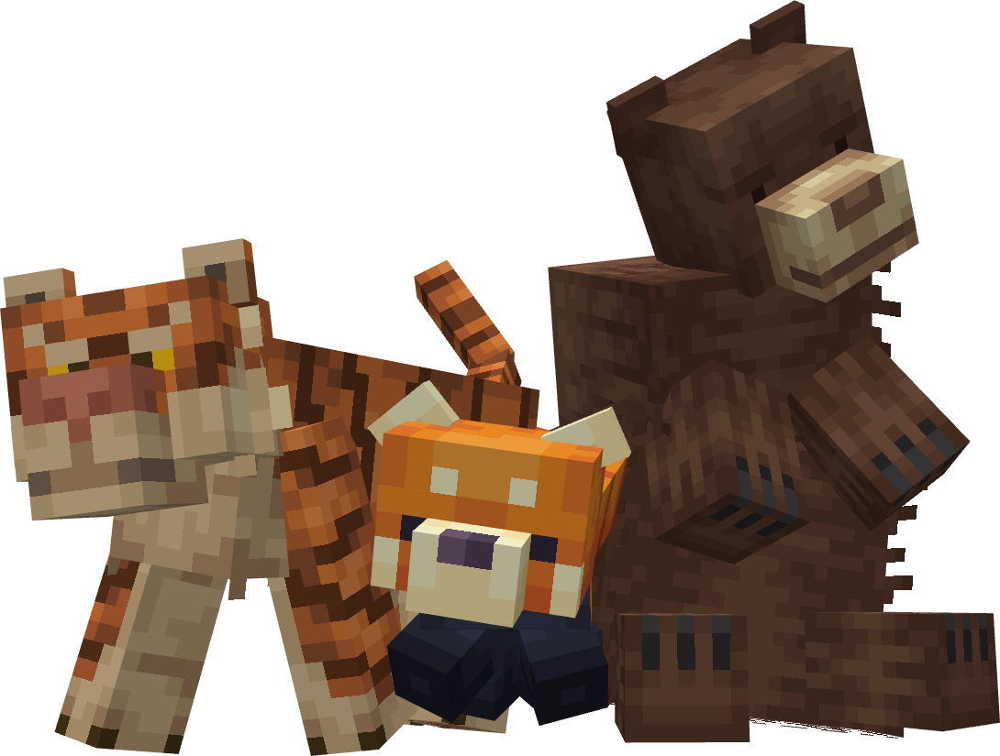
Forgés à partir des matériaux récoltés sur les créatures du mod.
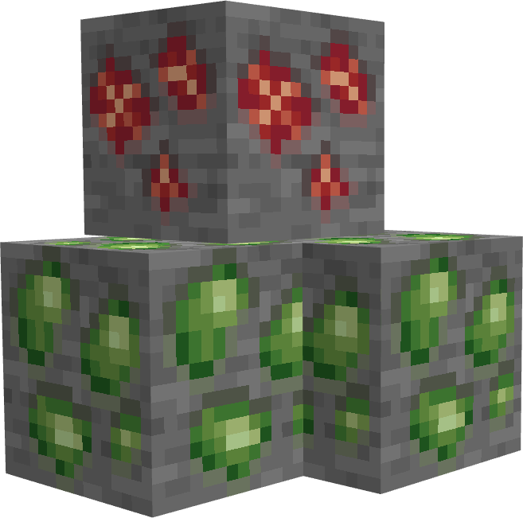
Crafts combinant minerais standards de Minecraft et matières naturelles.
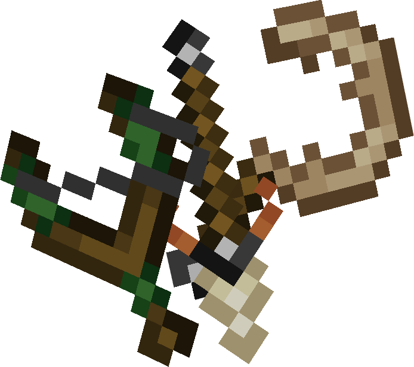
Des outils rudimentaires façonnés à partir des matières les plus brutes de la nature.
Des crafts avancés combinant ressources animales et minerais précieux.
Guide de Craft
Chaque équipement se fabrique sur une table de craft standard (3×3). Les matériaux se récupèrent en chassant ou en apprivoisant les créatures du mod.
Récoltés sur les créatures sauvages en les chassant, ou via des drops d'apprivoisement pour les créatures domestiquées.
Minerais standards de Minecraft : fer, or, diamant, netherite. Certains crafts avancés les combinent avec des matières animales.
L'Essence Sauvage et les Éclats d'Apprivoisement s'obtiennent dans des structures spéciales ou lors d'événements rares.
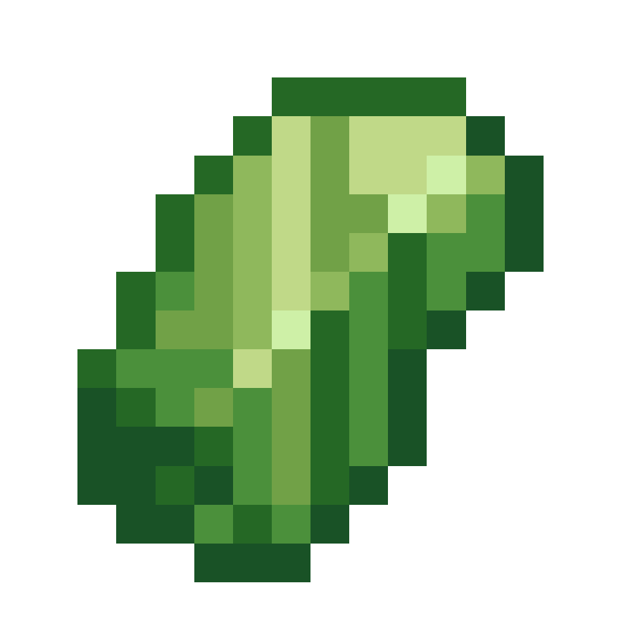
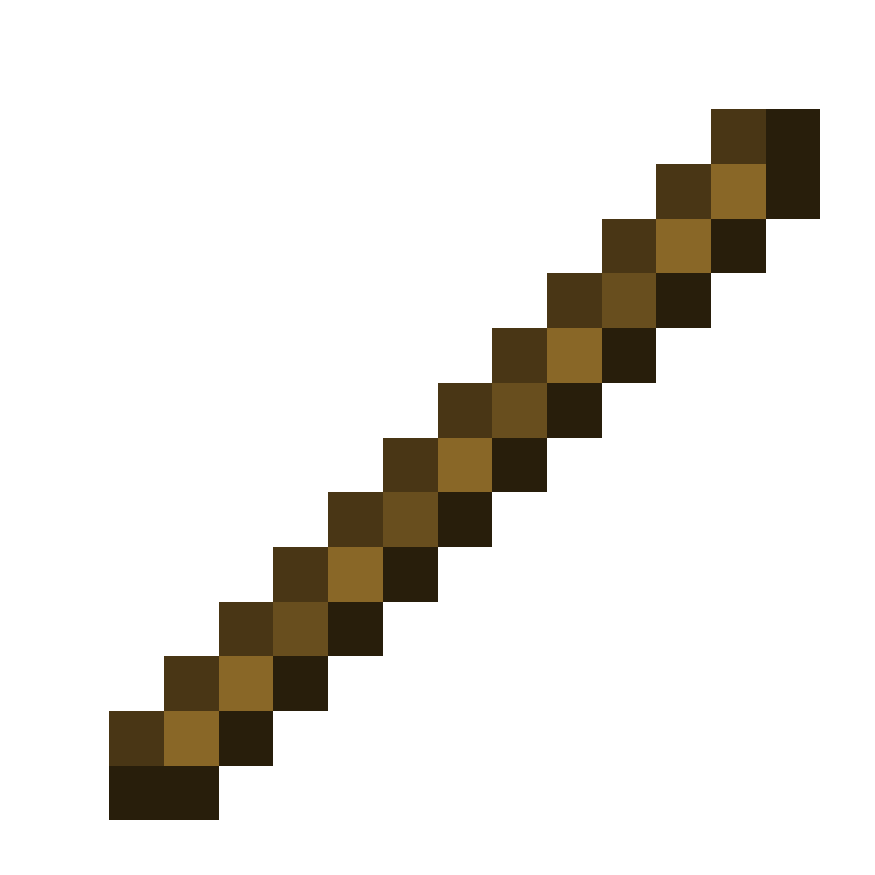
Épée en Jade
Galerie
Ressources
Tous les matériaux utilisés dans les recettes de craft des équipements du mod.